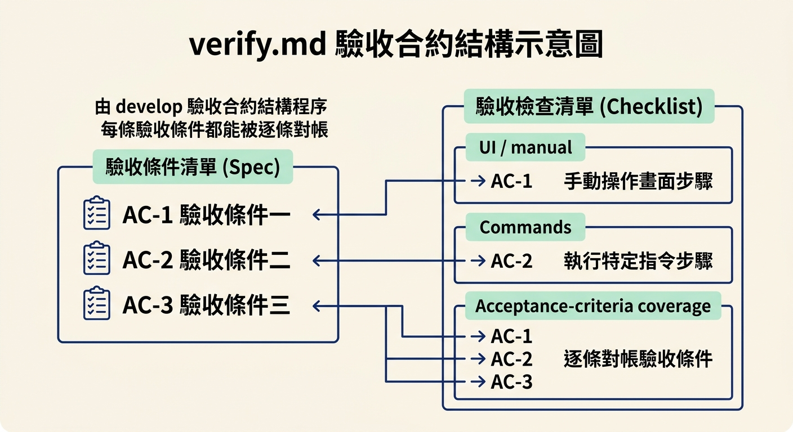
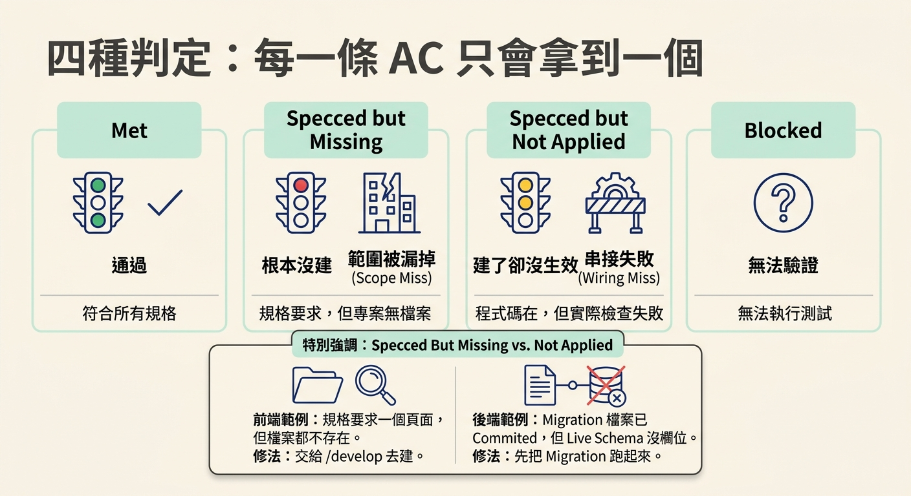
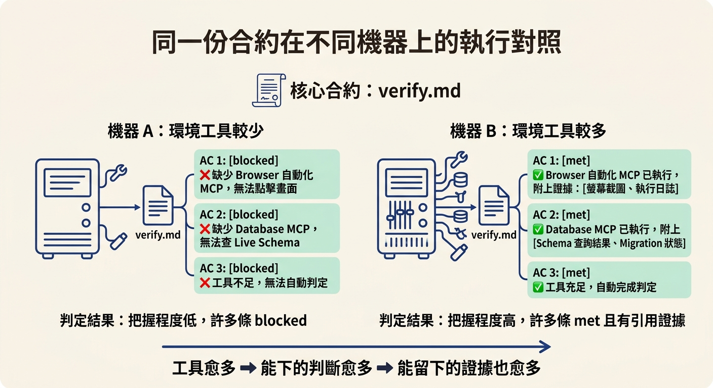

說出 check verify 從 /develop 留下的 verify.md 拿到驗收合約，每個驗收條件（AC-N）只會得到 met／specced but missing／specced but not applied／blocked 四種結果之一，而且沒有證據就不打勾。
上一節我們把「證明」分成兩種：check verify 回答「這個功能今天真的能跑嗎」，test 回答「以後每次改動，它還能不能跑」。順序是先 verify、後 test。但你可能接著會想：check verify 到底是憑什麼蓋章的？它會把整個 App 打開、四處點一點，然後給你一句「看起來沒問題」嗎？
不是。它動手之前會先讀一份別人寫好的合約，然後逐條照著合約去驗。這份合約叫 verify.md，不是 AI 在跑的當下臨時發明的，而是 /develop 在開發這個功能時就一起留下的。這一節要做的事，就是認出這份合約從哪裡來、它長什麼樣子、每一條驗收條件最後會被蓋上哪一種章，以及那條最硬的原則：沒有證據，就不打勾。
/check 有兩個模式，先分清楚/check 底下其實掛著兩個模式，做的事完全不同。verify 是執行期的證明：它把真的 App 跑起來，看這個變更實際運作的樣子，用來確認「功能真的存在、而且符合 spec」。review 是另一回事，它把這份 diff 交給一個沒寫過這段程式的模型做資深審查，把發現依嚴重程度排序。兩個模式都不會改你的程式：verify 把失敗指向 /debug 或 /develop，review 只回報問題，交給你去修。
這一節只談 verify。它有個定位很好記：它專門補上「測試是綠的」和「功能真的能動」之間那道落差。通過的測試只能證明「作者想到要測的那些東西」是對的，卻證明不了「這個功能真的存在」；verify 補的正是這一塊。
/develop 留下的 verify.md/check verify 做的第一件事，是找出這個功能對應的 spec，然後把它旁邊的 verify.md 讀進來。這份檔案是 /develop 動工時就寫好的，它把每個驗收條件（AC-N）連到一個可觀察的行為。換句話說，spec 定義「什麼叫做完成」，而 verify.md 把每一條完成條件翻譯成一兩個可以真的動手做的事。
這份 checklist 的骨架大致長這樣：
# Verify: <feature> · spec NNNN ## UI / manual - [ ] <action> → <expected> → AC-N ## Commands - [ ] `<command>` → <expected> → AC-N ## Acceptance-criteria coverage - AC-1 … · AC-2 … · …
## UI / manual 放的是要人在畫面上操作的步驟，## Commands 放的是要跑某個指令的步驟，最後的 ## Acceptance-criteria coverage 則把 AC-1、AC-2⋯⋯一條條列出來對帳。你會注意到每個步驟後面都掛著一個 → AC-N，這就是它為什麼能逐條回報：每一條驗收條件，都對應到你剛剛跑的某個步驟。

如果這個功能沒有對應的 spec（例如只是個沒有記錄的小改動），它會略過合約這一步，單純照觀察到的行為來驗。但只要有一份 governing spec，這份 checklist 就是它的範圍——而且它不會只挑有改動的檔案來看，因為「spec 有要求、卻根本沒被建」的那種漏，正是它要抓的。
跑完之後，/check verify 不會只給一句「感覺還行」，而是對每一條 AC-N 和每一個 spec 點名的表面（頁面、路由、資料表、migration）給出四種判定之一：
- met ✅: the check passed / the surface exists and behaves as specced. - specced but missing 🚫: specced but no implementation at all; never built, nothing to exercise. Name the exact spec item and the fix, e.g. "the spec requires `/auth/verify-email`, page not found (no route, no file); build it before this is done." - specced but not applied ⚠️: the code exists but its runtime check fails. Classic case: a written but un applied migration, e.g. "Migration `0007_add_verified_at.sql` is committed but the column isn't in the live schema; run the migration." - blocked ⚠️: couldn't be exercised (missing data/creds/env); say what's needed. Not applied is a confirmed runtime failure; blocked is unknown.
其中 specced but missing 和 specced but not applied 最容易混在一起。missing 是「根本沒蓋」：spec 要求一個頁面，但專案裡連檔案都沒有，這是範圍被漏掉（scope miss）。not applied 是「蓋好了，但沒生效」：程式碼就躺在那裡，只是實際跑起來的檢查失敗，最典型的例子是一個已經寫好、卻還沒套用的 migration——檔案 committed 了，但 live schema 裡就是沒有那個欄位（wiring miss）。兩者都會讓功能過不了，但修法完全不同：missing 要交給 /develop 去建，not applied 要你先把 migration 跑起來。

至於 blocked，它不是「通過」，而是「我沒辦法驗」——欠缺資料、憑證或環境，所以這條沒被真的測到。它和 not applied 的差別在於：not applied 是一次確認過的執行期失敗，blocked 是狀態未知。
這個 skill 存在的目的，是要「跑給你看」，而不是「讀程式碼推理看看」。所以它有一條寫得很死的規則：
1. **No evidence, no ✅.** A behavior is `met` only if you can cite the ledger entry from Step 3 that proves it: the command and its output, the URL and what rendered, the screenshot path, the query and its result. Cite it inline in the report. If you cannot cite it, the behavior is `blocked`, not `met`. 2. **Never started, never PASS.** If you did not actually launch and exercise the app in this run, you may not emit PASS or ✅ for anything. Report `blocked` for every behavior, say plainly that nothing was exercised and why, and stop.
翻成白話：就算程式碼讀起來完全正確、測試全部綠燈，只要沒有真的把 App 跑起來、沒有留下可以引用的證據，一條都不能打勾。原因很簡單：綠燈的測試只證明「作者想到要測的那些東西」是對的，它證明不了「這個功能真的存在」。spec 要求的一個表面如果根本沒被建，或一條 migration 沒被套用，測試再怎麼綠也看不到。這也是為什麼一條沒套用的 migration，可以讓一個測試全綠的功能照樣過不了。
在 demo 裡可以清楚看到這個原則怎麼運作。跑 check verify data model 時，它回報「一條 spec 檢查沒照文件跑、七條 smoke test 斷言裡有一條失敗」，其餘每一條都是對照一個真的 Supabase 資料庫拿到的證據，最後建議用 debug data model 把那兩個問題修掉再重跑。另一輪 check verify core review loop 的結果則是十五條行為裡九條 met、一條確認是真 bug、三條 blocked、一條因為需要 Vercel 部署而沒跑。注意那個 blocked：當下工具不夠，它就誠實說「沒驗到」，不會硬湊一個綠色給你。
上一個例子裡，為什麼會有那麼多條 blocked？因為判定結果有一部分取決於你給這個 skill 多少工具。有 browser 自動化 MCP，它才能真的點進畫面看；有 database MCP，才能直接對 live schema 查那條 migration 到底套用了沒。少了這些，原本可以判 met 的行為就只能退回 blocked。所以同一份合約、同一個功能，在不同環境跑出來的把握程度就是不一樣——工具開得多，能下的判斷就愈多，能留下的證據也愈多。

/check verify動手之前會先讀/develop留下的verify.md合約：那是一份把 spec 每條驗收條件（AC-N）連到可觀察行為的 checklist。它對每條 AC 與每個 spec 表面只給四種判定：met、specced but missing（沒建）、specced but not applied（建了卻沒生效）、blocked（沒工具可驗）。它的鐵律是「沒有證據就不打勾」——測試全綠、程式碼看起來正確，都不算證據；一條沒套用的 migration 就足以讓整個功能過不了。
認出合約與四種判定之後，下一節要把這條指令真的跑一次：看它從哪裡讀合約、怎麼把真的 App 開起來、留下的證據長什麼樣，以及報告出現 FAIL 或 BLOCKED 時，該把失敗分流到 /debug 還是 /develop。